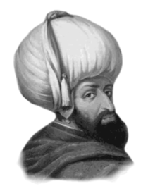

YILDIRIM BEYAZIT
Annesi : Gülçiçek Hatun
Doğumu : 1360
Vefatı : 8 Mart 1403
Saltanatı : 1389 - 1403 (13 yıl)
Yıldırım Beyazıt tahta geçtikten sonra, babasının vefatı üzerine Anadolu’da vuku bulan ayaklanmaların tamamını zamanda bastırdı. Germiyan, Aydın, Menteşe ve Saruhan beylikleri bu devirde katıldı. Hâmid Beyliği’ne bağlı İsparta, Burdur, göller yöresi Osmanlıların oldu.
Yıldırım 1391’de Bizanslılardan Şile’yi aldı. İstanbul’u yedi ay kuşattı, Tuna Nehri’ni geçerek Romanya’yı Osmanlılara tâbi kıldı. 1392’de Silivri ve Selanik Osmanlılara katıldı. 1393’de Bulgaristan tamamen fethedildi. 1394’de Kastamonu ve çevresi alındı. Arnavutluk ve çevresi de Osmanlı topraklarına katıldı. 1396’da Haçlı ordusu Niğbolu’da imha edildi. Binlercesi esir alındı. 1397’de Salona Piskoposu, padişahı bizzat davet ederek halkın zulümden kurtarılmasını rica etmiş bunun üzerine Yıldırım Beyazıt, Bizanslılardan Silivri, Mora ve Attika’yı kurtarmıştır. Türklerin Yunanistan’ı almaları böyle olmuştur. Girdiği savaşlarda göstermiş olduğu cesaretten dolayı 1397’de ona “Yıldırım” lakabı verilmişti.
Karaman Beyliği tamamen Osmanlı topraklarına ilhak edildi. İstanbul yeniden kuşatıldı. Dulkadir Beyliği Osmanlılara tabi oldu. Bir Haçlı ordusu, Tuna Nehri kıyısında bulunan Niğbolu Kalesi’ni kuşatmıştı. Yıldırım Beyazıt da ordusu ile Niğbolu Kalesi önlerine kadar geldi. Bir gece Yıldırım Beyazıt, tek başına atına binerek düşman saflarını yardı. Niğbolu Kalesi’nin duvarları dibine yanaşarak bir elini kale duvarına dayadı ve: “Bire Doğan!” diye seslendi. Bu sesi tanıyan Niğbolu Kalesi kumandanı Doğan Bey de yukarıdan: “ Ne var, şevketlüm!” diye sordu.
Padişah, “Ordumla birlikte geldim. Sakın kaleyi teslim et-meyesin!” emrini verdikten sonra atını sürerek gece karanlığında bir yıldırım gibi karargâha döndü. 1400’de İstanbul bir daha kuşatıldı. 1402’de (rivayete göre ulemadan cevazına dair fetva alınmadan) Timur ile Ankara Savaşı yapıldı ve Yıldırım Beyazıt yenildi. Timur’un yanında esir olarak kalan büyük Osmanlı hükümdarı ve Fatih’in dedesi üzüntüsünden yedi ay on iki gün sonra kırk üç yaşında iken vefat etti. Cenazesi oğlu Çelebi tarafından Bursa’ya getirilerek, kendi türbesine defnedildi.
Yıldırım’ın kazanmış olduğu zaferlerin en mühimlerinden birisi 25 Eylül 1396 yılında, tek başına Müslüman Türk milletinin, bütün bir Hıristiyan Avrupa devletlerine karşı kazanılmış ve tarihin en büyük zaferlerinden birisi olan Niğ-bolu Zaferi idi. Bu şanlı zaferin neticeleri de çok büyük olmuştur. Bu zafer, Osmanlı Türk Devleti’nin, doğu İslâm âleminde de tanınmasına sebep oldu. Mısır’daki Abbasi Halifesi I. Mütevekkil, Yıldırım Beyazıt’a tebrik için gönderdiği mektubunda, “Sultan-ı İklim-i Rum” unvanı ile hitabetti.
Erkek çocukları: Musa Çelebi, Süleyman Çelebi, Mustafa Çelebi, İsa Çelebi, Mehmet Çelebi, Ertuğrul Çelebi, Kasım Çelebi.
Kız çocukları: Fatma.